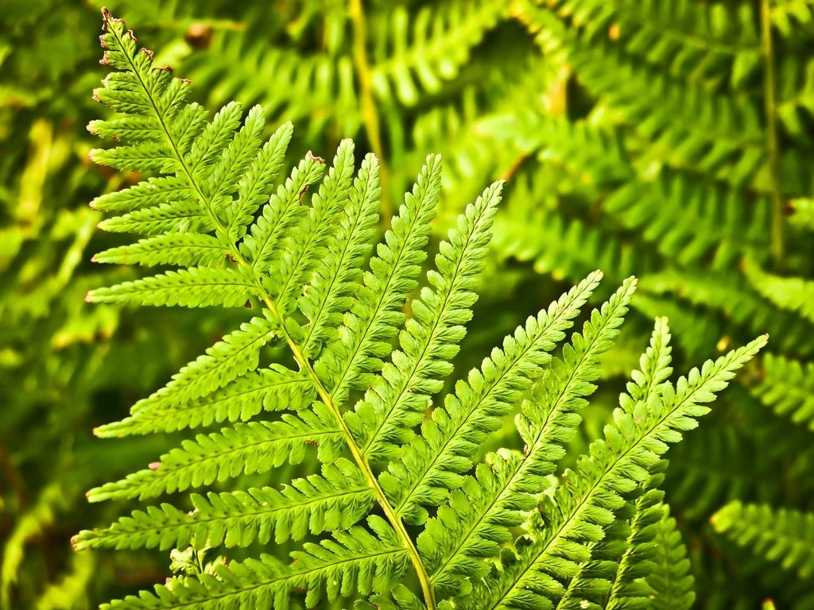
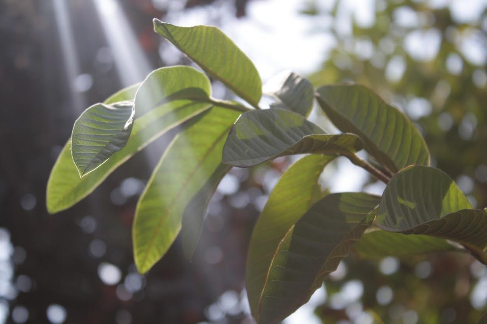

メニュー

メニューは準備中です（お問い合わせください）
お店に確認でき次第、こちらに掲載します。
準備中（お問い合わせください）

メニューについては、お電話かInstagramからお問い合わせください

メニューは準備中です（お問い合わせください）
お店に確認でき次第、こちらに掲載します。

メニューについては、お電話かInstagramからお問い合わせください
掲載の写真はフリー素材のイメージで、店舗の実際の様子ではありません。他の地域で撮影されたもの、撮影地が不明なものを含みます。